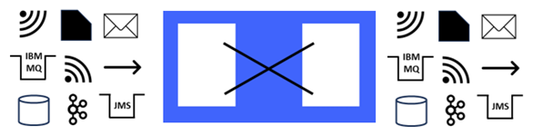

Protocol Transformation Patterns

The Protocol Transformation patterns category provides simple integration solutions that transform between protocols when sending and receiving data. You can integrate client applications that use different protocols and message formats. Each pattern instance involves a single input protocol and a single output protocol. In total there are 72 patterns in this category providing every combination of input and output from the following list of protocols: Database, Email, File, HTTP, IBM MQ, JMS, Kafka, MQTT and TCPIP.
Pattern: File to IBM MQ
This pattern instance contains an application named: SUB_APPLICATION
The application contains a message flow which has been named: SUB_MESSAGEFLOW
The message flow reads in data from files. It polls the input directory location SUB_FILEINPUTDIRECTORY for files which match the file name or pattern SUB_FILEINPUTPATTERN
The message flow writes data to IBM MQ. The name of the output queue is SUB_MQOUTPUTQUEUE
Things to remember before deploying and testing the generated application!
- To test out the application, you will need to deploy it to an integration server. If you've never used an integration server before, we have some useful tutorials that explain how to quickly create one (go to the Help menu and select Tutorials Gallery).
- When you deploy the generated application to the integration server, because the message flow expects to receive file input, the message flow will attempt to poll the specified local input directory on the integration server machine. Make sure that a directory exists of the correct name.
- When you deploy the generated application to the integration server, because the message flow expects to send IBM MQ messages, the message flow will attempt to connect to the local queue manager associated with the integration server.